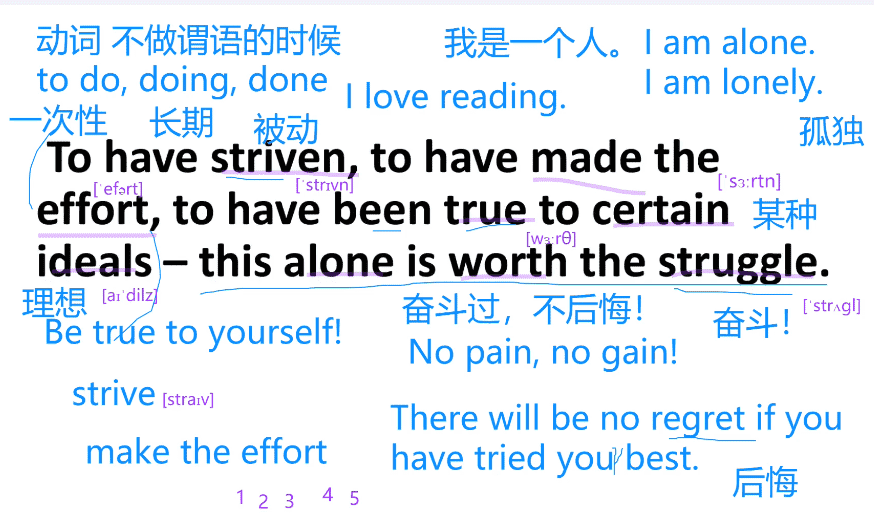
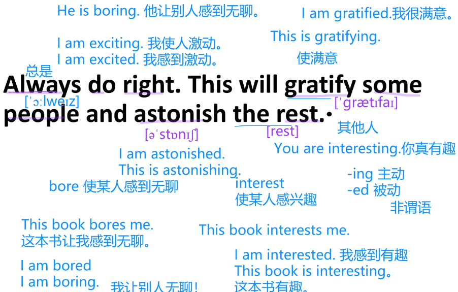

晨读
字数为 1219.
- TAGS: Power
学习计划
晨读： 6:30 - 7:30
- 金句 6:30 - 7:00
- 新概念2 7:00 - 7:30
- 纠音
金句学习
- 单词输入
- 语法提升
- 发音纠正
- 六步跟读法
- 每个词念一遍，按词跟读
- 按词组跟读
- 按语义跟读
- 整句跟读
- 一起读
- 影子跟读，闭上眼睛跟读
新概念2学习（大学4 6级）
听力训练
完整听一遍
句子解读
听每一句话的中文和英文
大意理解
整篇文章的大意理解
1
To have striven, to have made the effort, to have been true to certain ideals - this alone is worth the struggle. -William Osler
有奋斗过、有努力过，曾忠于某些理想-这就足以让挣扎值得。- 威廉-奥斯勒
威廉-奥斯勒出生在加拿大，是美国约翰-霍普金斯医院的创立人之一，他创立了住院医师、临床实习的制度，被尊称为‘现代医学之父’，他也是位作家、书本与医学史相关文物的收藏者。
1.单词输入
2.语法提升
主干： this alone is worth the she struggle. 仅仅是这一点就值得奋斗了。 alone 仅仅
This book is worth reading.
I am alone. 我是一个人。I am lonely. 我感到孤独
动词不做谓语的时候，to do(表示一次性的), doing(表示长期的), done
strive, struggle 都有奋斗的意思。strive 主动的努力，struggle 陷入泥潭被动招架的感觉
make the effort 付出努力
be true do something 对某件事真实。 Be true to yourself. 对自己真实(直面自己的内心)
certain 某种, ideals 信念、理想
ideal boyfriend 理想男友
奋斗过，不后悔 No pain, no gain. 或 There will be no regret if you have tried you best.
3.发音纠正
strive
verb UK /straɪv/ US /straɪv/ strove or strived | striven or strived
to have made the effort. effort 是元音开头，所以the念 /ðə; before vowels ði;
alone adjective [not before noun], adverb 形容词[不在名词之前]、副词
重音部分
To have striven, to have made the effort, to have been true to certain ideals - this alone is worth the struggle. -William Osler

- 六步跟读法
- 每个词念一遍，按词跟读
- 按词组跟读
- 按语义跟读
- 整句跟读
- 一起读
- 影子跟读，闭上眼睛跟读
2
Always do right. This will gratify some people and astonish the rest.-Mark Twain
永远做对的事，这将满足一些人，其他人则将感到惊奇。 - 马克.吐温
马克.吐温为美国作家及幽默家，以《汤姆历险记》及续集《顽童历险记》为其代表作，后者因完美叙述美国文化而被誉为‘美国经典小说’(the Great American Novel)
1.单词输入 2.语法提升
always do right 总是要做正确的事情
gratify 使某人感到满意、开心
astonish 使用某人感到惊讶 as‧ton‧ish /əˈstɒnɪʃ $ əˈstɑː-/ ●○○ verb [transitive]
interest 使某个感兴趣。
this book interests me. 这本书让我感到兴趣。
this book is interesting. 这本书有趣。
-ing 主动 -ed 被动 非谓语的知识
you are interesting. 你真有趣。
rest 剩余的人、其他人
bore 使某个感到无聊。
this book broes me.
i am bored 我感到无聊。
i am boring 我让别人无聊。
He is boring. 他让别人感到无聊。
I am excited. 我感到激动
I am exciting. 我使人激动。
I am gratified. 我感到满意。我很满意。
This is gratifying. 这件事使人满意、快乐。
I am astonished. 我感到吃惊。
This is astonishing. 这件事情让人惊讶。
This will gratify some pepople. 这一点会让一些人满意。
and astonish the rest 让其他人感到惊讶。
3.发音纠正
Always do right. This will gratify some people and astonish the rest.-Mark Twain

4.六步跟读法
- 每个词念一遍，按词跟读
- 按词组跟读
- 按语义跟读
- 整句跟读
- 一起读
- 影子跟读，闭上眼睛跟读
外刊
Investors had hoped to celebrate the moment US lawmakers agreed on a new stimulus package to help America's ailing economy. Instead, the emergence of a new variant of the Covid-19 virus in the United Kingdom has sent markets plunging, as anxiety about the pandemic again comes to the fore.
What's happening: Over the weekend, the United Kingdom reversed plans to loosen restrictions over Christmas and announced strict lockdowns across much of the country,citing concerns about a variant of the coronavirus believed to be much more infectious. In the past 24 hours, the country has become increasingly isolated, with Canada, France and Israel among those banning Uk travelers while they assess the situation.
But good news out of Washington is already taking the back seat. "It is insufficient to alleviate the UK situation and immediate negative [sentiment]," said Stephen Innes, chief global markets strategist at Axi. S&P 500 futures were 1.6% lower as of 7:15 a.m. ET. Dow futures were down 1.3%, or more than 400 points, while Nasdaq futures were off 0.9%.
讲解
Investors(投资人) had hoped to celebrate(庆祝) the moment(时刻) US lawmakers(美国立法人) agreed on a new stimulus package(新的刺激方案) to help America's ailing economy(处境困难的经济). Instead(取而代之的是), the emergence(危急情况) of a new variant(变异体) of the Covid-19 virus(新冠病毒) in the United Kingdom(英国) has sent markets plunging(市场暴跌), as(因为) anxiety(焦虑) about the pandemic(疫情) again comes to the fore(引人关注).
What's happening(发生什么事了): Over the weekend(在周未), the United Kingdom reversed(反转) plans(方案) to loosen(使放松) restrictions(限制) over Christmas and announced strict lockdowns across much of the country,citing concerns about a variant of the coronavirus believed to be much more infectious. In the past 24 hours, the country has become increasingly isolated, with Canada, France and Israel among those banning Uk travelers while they assess the situation.
But good news out of Washington is already taking the back seat. "It is insufficient to alleviate the UK situation and immediate negative [sentiment]," said Stephen Innes, chief global markets strategist at Axi. S&P 500 futures were 1.6% lower as of 7:15 a.m. ET. Dow futures were down 1.3%, or more than 400 points, while Nasdaq futures were off 0.9%.
47